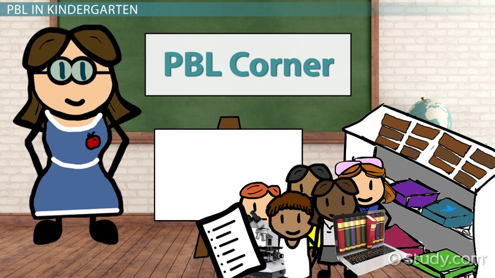

Project Based Learning (PBL)
PBL and FLIP are activities wherein students research for a particular topic on internet and create PowerPoint Presentations, learn and research on TED
classes; create extensive reports in Math�s, Science and Social Science.

HOME<<